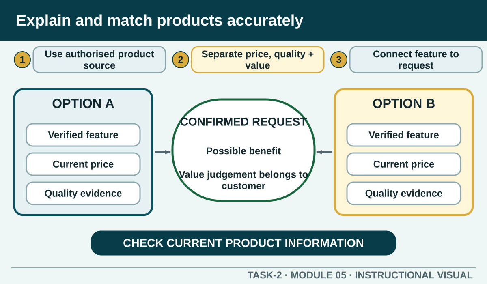

Develop the product knowledge, value language and verification habits needed to recommend hospitality products without pressure or unsupported claims.
Learning intention
What success looks like
Identify the product information a worker needs before making a recommendation.
Explain how pricing, quality and value contribute to satisfaction without claiming that price alone proves quality.
Compare options using confirmed features that connect to the customer's stated need or want.
Correct a product-information error promptly and escalate safety-sensitive questions.
Core ideas
Build the complete picture
1
Product knowledge begins with an authorised source
2
Price, quality and value are connected but different
3
Connect a feature to the customer's request
4
Compare, do not pressure
Visual explanation
Explain and match products accurately

Separate factual product features from customer benefits, price and value judgements.
Worked example
Product knowledge begins with an authorised source
Product knowledge may include the current name, description, price, portion or service format, availability, quality features, preparation or delivery time where confirmed, and the process for checking ingredients or other safety-sensitive information. The source of that information matters.
A menu description says 'seasonal soup'. To answer what today's soup is, the worker checks the current service information rather than assuming yesterday's product is unchanged.
Question the room
Which source is strongest for explaining what is available right now?
The current authorised menu or service information, checked against today's availability.
A worker's memory of last week's service.
A generic practice card from this course site.
Apply
Match the product to the request
Fictional café menu: A—fruit cup, chilled, takeaway available; B—vegetable toastie, served hot, contains wheat and dairy; C—garden salad, dressing supplied separately, dine-in or takeaway; D—soup of the day, hot, ingredients must be checked with the kitchen. Prices and local recipes are deliberately omitted.
Read the complete menu stimulus.
Match four requests.
Write a recommendation using feature → benefit → confirmation.
Exit ticket
Action · evidence · next step
Compare two fictional hospitality options for a customer with a stated price limit and preference for a light meal. Explain the relevant feature, possible benefit, limitation and verification needed before recommendation.
One action I would take
The evidence I would check
The person or source I would confirm with
My next improvement
1 of 8
Speaker notes and delivery prompts
Open with this purpose: Develop the product knowledge, value language and verification habits needed to recommend hospitality products without pressure or unsupported claims.
Use Product knowledge begins with an authorised source to connect prior learning to the first observable workplace decision.
Model Product knowledge begins with an authorised source by walking through this supplied example: A menu description says 'seasonal soup'. To answer what today's soup is, the worker checks the current service information rather than assuming yesterday's product is unchanged.
Ask: Which source is strongest for explaining what is available right now? Confirm the strongest response as The current authorised menu or service information, checked against today's availability..
Listen for this misconception: Memory may be outdated and should be checked against current information.
Move into Match the product to the request, then collect the saved response and finish with the source boundary: Authorised source note: Grounded in T2-S01, T2-S04 and T2-S05. All product cards must be visibly labelled as neutral practice unless replaced by a current authorised local menu or service list.